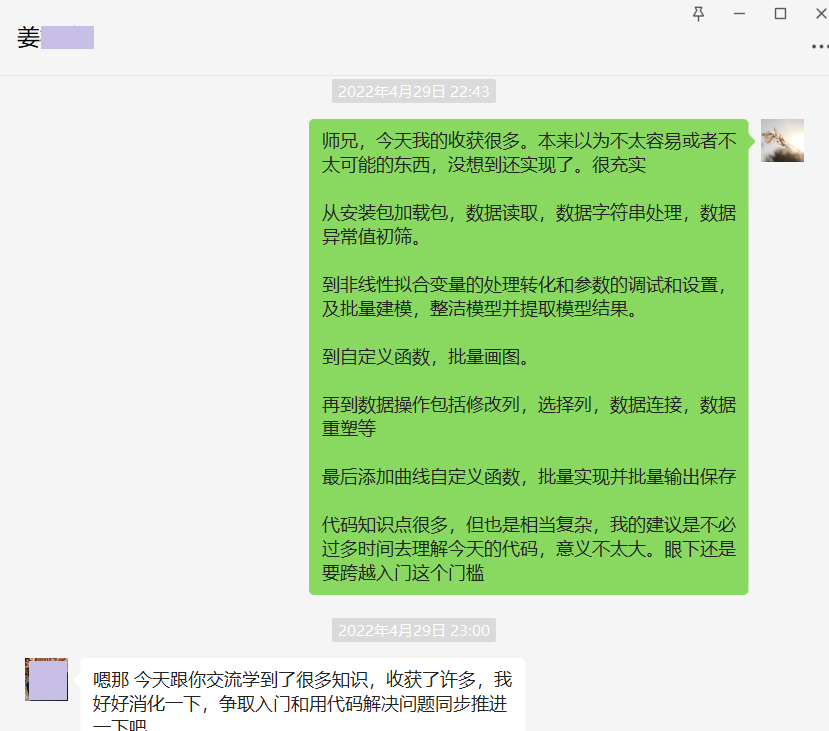

之前建站时遇到的一个奇怪的问题，当时就是不知道原因出在哪里。
虽然不理会它也不会对功能产生什么影响，但过了将近一个月，还是会觉得膈应。就像4年前生日那天晚上老丁问我的那样，“你是不是有强迫症啊？”。我想至少在某些问题上是吧，我不否认，也确实会映射出来。因为这个问题在脑海反复跳出过几次，在头顶围着转，嗡嗡~ 😂 主要还是因为：如果不解决，随着时间的积累，这个问题会被不断放大，虽然依旧不会对功能造成影响，但就是…YOU KNOW。就好比你整理了一遍电脑桌面，干净多了。然后重启，之前乱糟糟的一堆文件又蹦到桌面。大概这样的道理。如果你不在意它倒没事；但如果你在意，那就完了。投入到一件事，结果却不大满意的时候。比如后期修图的色彩偏差，比如代码批量处理不能一步到位，比如…很难受的。
我不知道这样“吹毛求疵”到底可不可取。但很多时候又都是在某一个地方硬磕才向前了一步。也许效率和完美结果总是要经历一番究极权衡。而自身又经历过太多太多次。一直搜，最后可能就是在某个网页多停留了一秒，才发现解决问题的方案。否则就是擦肩而过、无功而返。当然，这种情况也经常出现。
🏃🏃🏃

那就再试一试吧。还好找到了问题所在，原来是一个bug。
我还是相信，如果多走额外的一步，会有更好的结果，甚至（对于问题能解决与否）起到决定性的作用。
The unexpected but extremely important consequence if you go the extra step
（以下是解决过程）
用几个关键词在必应上搜。
然后在Github里发现，原来有人也遇到了相同的issue。
When running hugo server, after few changes to content files and refreshing browser files and folders from static folder appear in project root directory somehow.
When I update config, static files appear in project root folder, but I don’t get any error.
If the site has a static directory (even an empty one), and you run hugo server, the error will appear whenever you modify the site configuration.
最后提到”0.104.2 fixed this issue”。竟然是Bug，已经被修复。更新Hugo版本就好了。
Related github issues: